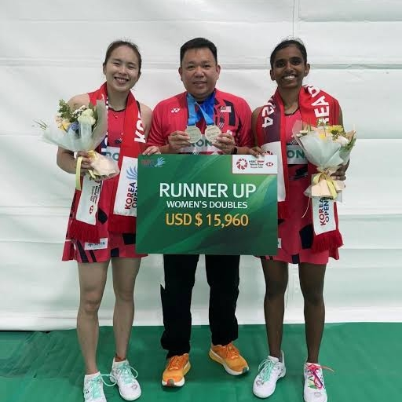
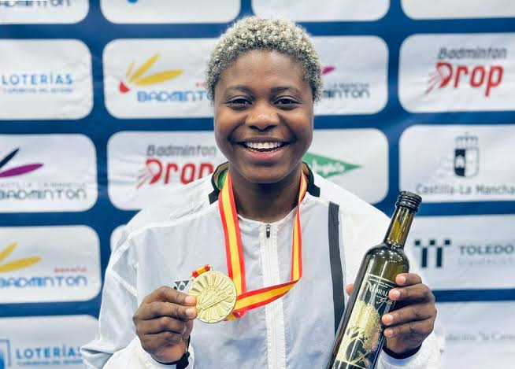

ğŸ¸EVENTSğŸ¸
|
|
|
Get ready to smash, drop, and drive your way to victory! Smash Titans💪🔥 is proud to announce our annual badminton tournament, a thrilling competition for players of all skill levels. This year's tournament will feature Men's Singles, Women's Doubles, Mixed Doubles, Beginner/Intermediate/Advanced categories.
Event Highlights:
- Competitive matches with certified umpires
​
- Prizes for winners and runners-up in each division
​
- Round-robin and/or knockout formats to ensure ample playing time
​
- Refreshments and snacks provided throughout the tournament
​
- A fun and supportive atmosphere for players of all levels
| 
| 
| 
|
Whether you're a seasoned player or just starting out, the "Smash & Social" Tournament is the perfect way to enjoy badminton in a relaxed and welcoming atmosphere.
Join us for a day of badminton fun, friendly competition, and good times at the [Club Name] "Smash & Social" Tournament! This event is all about enjoying the sport, meeting new people, and having a blast on the court. | |